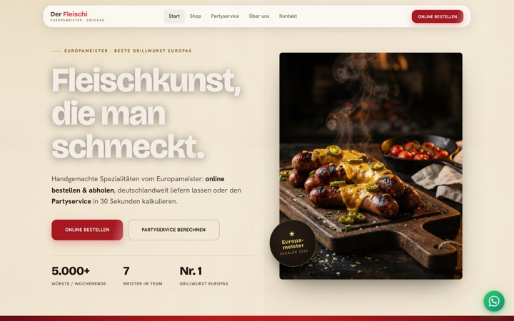
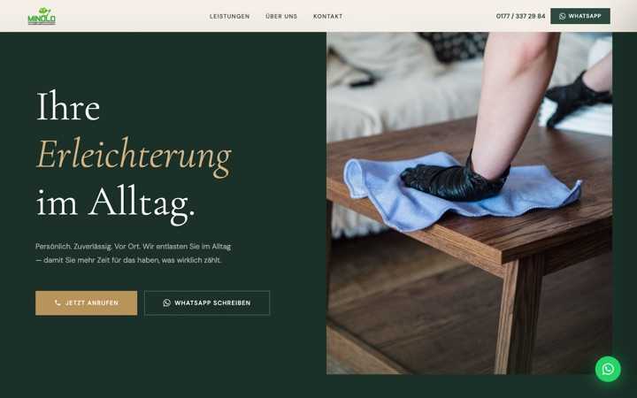

Sehr geehrte Damen und Herren,
Sie haben sich am Telefon eine kurze Vorstellung gewünscht. Hier ist sie — ohne Angebot, ohne Anhang, in zwei Minuten gelesen.
Ich bin Frederic Bochmann, ich komme aus Zwickau und arbeite mit Betrieben aus der Gegend. Meine Arbeit fängt nicht bei einer Website an, sondern bei der Frage, warum ein Betrieb, der gute Arbeit macht, trotzdem übersehen wird.
Fast immer ist der Betrieb nicht das Problem. Nur sieht ihn niemand, der ihn noch nicht kennt.
Handwerk, Qualität und Ruf stimmen — aber wer nicht gezielt danach sucht, bekommt den Betrieb nie zu sehen. Der Auftrag geht an den, der sichtbarer ist.
Wer heute eine Arbeitsstelle sucht, schaut zuerst online nach — und findet oft nichts, was Lust macht, sich zu bewerben. Die Stelle bleibt offen.
Der Betrieb liefert seit Jahrzehnten erstklassig, der Auftritt sieht aber aus wie 2012. Das kostet Vertrauen, bevor das erste Gespräch überhaupt stattfindet.
Die meisten fangen hinten an: neue Website, und dann passiert nichts. Sichtbarkeit ist aber eine Kette, und die Website ist ihr letztes Glied. Sie fängt auf, was vorher entstanden ist — sie erzeugt es nicht.
Sie müssen das nicht auf einmal machen. Die meisten fangen mit dem ersten Schritt an und schauen, was passiert.
Meistens ist eines von beiden gerade das dringendere. Sagen Sie mir, welches — danach richtet sich alles Weitere.
Damit nicht nur die anrufen, die Sie ohnehin schon kennen: regelmäßig sichtbar im Einzugsgebiet, ein Google-Profil, das Anrufe bringt, Bewertungen, die tragen.
Weil die Stellenanzeige längst nicht mehr reicht: der Betrieb als Arbeitgeber sichtbar, Einblicke ins Team, Bewerbung ohne Hürden direkt vom Handy.
Ein Auszug. Zwei davon sind laufende Kundenprojekte, zwei sind Konzeptstudien — Musterprojekte, an denen ich zeige, was in einer Branche möglich ist. Ich kennzeichne das, weil der Unterschied wichtig ist.
Fleischerei · Zwickau
Auftritt für einen Meisterbetrieb mit Europameister-Titel, inklusive laufender Betreuung.
Alltagsservice · Callenberg
Senioren- und Haushaltsdienst, seit 2026 unter eigener Domain online.
Hausverwaltung · Westsachsen
Mit eigenem Bereich für Eigentümer und Mieter — Anfragen laufen strukturiert ein statt über drei Kanäle.
Osteopathie & Coaching
Ruhiger Auftritt mit klarer Terminstrecke.


Kein Callcenter und keine Ticketnummer. Ich mache Strategie, Google und die Website; dazu kommt ein fest angestellter Videograf, der den Content bei Ihnen vor Ort dreht — Ihr Betrieb, Ihre Leute, Ihre Arbeit.
Sie haben einen Ansprechpartner. Und wenn etwas nicht funktioniert, sage ich Ihnen das, statt es Ihnen zu verkaufen.
Wenn Sie mögen, schaue ich mir an, wo Ihr Betrieb online gerade steht, und sage Ihnen ehrlich, ob sich überhaupt etwas lohnt. Das kostet nichts und verpflichtet zu nichts — und wenn sich nichts lohnt, hören Sie das auch von mir.
Mit freundlichen Grüßen aus Zwickau